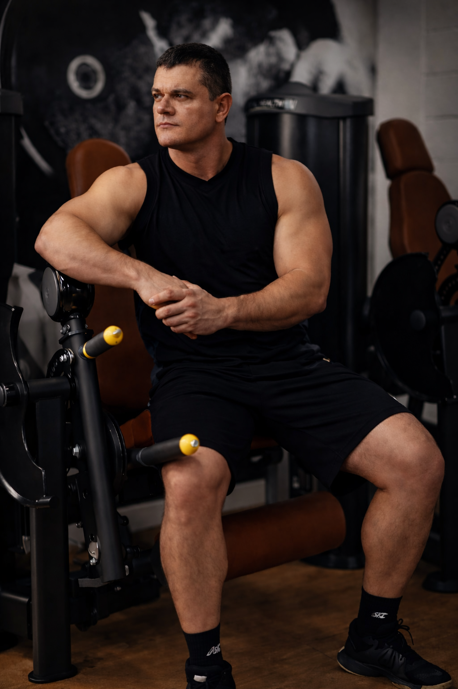

Sua Jornada Começa Aqui
Quem é o Professor Capucho?
Com mais de 15 anos de experiência no mercado fitness, dediquei minha carreira a entender não apenas como transformar corpos, mas como mudar vidas através da disciplina e do movimento.
Minha abordagem é baseada em ciência, biomecânica e, acima de tudo, na individualidade de cada aluno. Não acredito em fórmulas mágicas, mas em métodos comprovados.
- Graduado em Educação Física
- Especialista em Fisiologia do Exercício
- Mentor de Atletas de Alta Performance